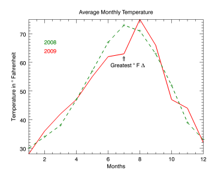
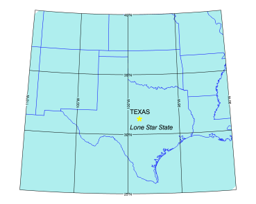

Use the TEXT function to add labels and annotations to an existing graphic. You can use TEXT at the time you create the graphic or from the command line after the graphic is displayed.
The examples show a couple of ways you can use TEXT.

The code shown below creates the plot graphic shown above. You can copy the entire block and paste it into the IDL command line to run it.
; Define the data.
temp08=[30, 34, 38, 47, 57, 67, 73, 71, 63, 52, 39, 33]
temp09=[28, 36, 42, 47, 55, 62, 63, 75, 66, 47, 44, 32]
months=[1, 2, 3, 4, 5, 6, 7, 8, 9, 10, 11, 12]
; Draw the first plot.
p = PLOT(months, temp09, 'r', $
YTITLE='Temperature in $\circ$ Fahrenheit', $
XTITLE='Months', $
TITLE='Average Monthly Temperature', $
THICK=2)
; Draw the second plot.
p2 = PLOT(months, temp08, '--+2g', /OVERPLOT)
; Add annotations to describe the data.
; These can be added after creation at the command line.
text08 = TEXT(0.2,0.75,'2008', /CURRENT, COLOR=!color.green)
text09 = TEXT(0.2,0.70,'2009', /CURRENT, COLOR=!color.red)
arrow = TEXT(0.58, 0.64, '$\Uparrow$', /CURRENT)
difftext = TEXT(0.5, 0.62, $
'Greatest $\circ$ F $\Delta$', /CURRENT)
This example displays a map of part of the US, using the TEXT function to label the state of Texas.

The code shown below creates the graphic shown above. You can copy the entire block and paste it into the IDL command line to run it.
; Set up the map projection.
map = MAP('STEREOGRAPHIC', $
FILL_COLOR = "Pale turquoise", $
LIMIT = [25.0, -110, 40.0, -90.0], $
CENTER_LATITUDE = 25.0, $
CENTER_LONGITUDE = -100.0)
; Display the states on the map.
states = MAPCONTINENTS(/US, COLOR = "blue")
; Label the state of Texas.
texas = TEXT(-99.8, 31.7, /DATA, 'TEXAS')
star = TEXT(-99.2, 30.4, /DATA, '*', $
FONT_SIZE=28, FONT_STYLE='Bold', $
FONT_COLOR='yellow')
label = TEXT(-99.8, 30.4, /DATA, $
'Lone Star State', FONT_STYLE='Italic')